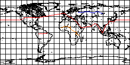
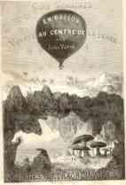
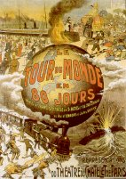
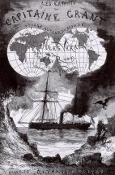

Què
són els viatges extraordinaris
Amb
la publicació de Cinc setmanes en globus el 1863, Verne inicia
la sèrie de novel·les coneguda amb el nom de Viatges Extraordinaris.
Viatge al centre de la terra, De la terra a la lluna, La volta
al món en 80 dies, Els fills del capità Grant o Vint
mil llegües de viatge submarí són alguns dels títols
més coneguts que en formen part. L'eix fonamental de totes aquestes obres
és, evidentment, el motiu del viatge. Un viatge que en Verne sempre adopta
unes característiques més o menys constants. En aquest sentit,
els periples vernians són sempre farcits d'aventures trepidants en les
que els seus protagonistes s'enfronten a una naturalesa hostil, enigmàtica,
però alhora pròdiga i suggerent. Els herois vernians no són
mai viatgers sublims com Ulisses o Jàson, travessant regions mítiques,
ni tampoc viatgen per espais simbòlics o fantàstics com Gulliver
o Alícia, són viatgers intrèpids que recorren un món
insòlit però real, inquietant i enigmàtic però explicable
per a la raó i comprensible gràcies a la ciència. Un món
gairebé sempre exòtic i sense civilitzar, que abasta les selves
verges, les regions polars, els grans oceans o, fins i tot, la lluna i les mateixes
profunditats de la terra.
El viatge vernià
és sovint un viatge doble: els viatgers recorren un espai físic
i alhora realitzen també un recorregut interior simbòlic. En aquest
darrer viatge, l'heroi es veu sotmès a un procés de transformació,
de creixement personal, de maduresa, de coneixement d'ell mateix, que al capdavall
el condueix cap a una més gran saviesa, cap a l'amor cobejat o cap a
la felicitat anhelada. De fet, per a molts dels protagonistes dels Viatges
extraordinaris, el viatge és una finalitat en si mateix perquè
té un caràcter iniciàtic o purificador. Alguns herois de
Verne, sobretot els més joves, emprenen el viatge a la recerca del pare
perdut, al qual admiren per la seva audàcia i per la seva talla moral,
ho podem comprova en obres com Els fills del capità Grant, El
gran Orinoco o Mistress Branican. Moltes vegades els Viatges extraordinaris
són veritables trajectòries de formació d'herois joves,
com passa a Viatge al centre de la terra, Un capità de quinze
anys o Vint mil llegües de viatge submarí. D'altres vegades,
els protagonistes -esdevinguts nàufrags per atzar en illes remotes- han
de superar els reptes d'una naturalesa salvatge que posa constantment a prova
les seves capacitats, en són exemple: L'illa misteriosa, Dos
anys de vacances, Escola de robinsons o Els nàufrags del
Jonathan. De vegades, el viatge pren un caràcter força real
quan els herois es mouen per escenaris on recentment s'han produït esdeveniments
històrics, és el cas de Nord contra sud, L'arxipèlag
de foc o Camí de França. En alguns casos els protagonistes
visiten ambients que recorden els relats terrorífics de Hoffmann (Missió
Barsac, Mestre Zacaries, El castell dels Carpats) o les narracions
inquietants de Poe (El Chancellor, L'esfinx dels glaços,
La Jancada).
Tradicionalment
els crítics de l'obra de Verne han distingit dos períodes en la
gestació dels Viatges extraordinaris. Fins al 1879 el cicle es
caracteritza per un optimisme i un vitalisme gairebé a ultrança.
Les novel·les de les dècades de 1860 i 1870 estan amarades d'una
confiança plena en la ciència i en la tècnica com a agents
de domini de la naturalesa i de garantia del progrés social de la humanitat.
En aquest sentit, l'obra de Verne és un reflexe fidel del context ideològic
i intel·lectual de l'època. Context que influirà de tal
forma en el nostre autor que farà dels primers Viatges extraordinaris
un dels testimonis més punyents de la influència de les ideologies
en la literatura. Verne es veurà, doncs, sotmès a l'influx del
positivisme filosòfic i de les teories del socialisme utòpic,
dos sistemes ideològics que embolcallaran les accions vitals dels herois
vernians en les més audaces peripècies dels aventurers ficticis
del segle XIX.El
positivisme de Comte, sistema filosòfic que es fonamenta en una confiança
plena en el poder de la ciència, propugnava que l'observació i
el raonament lògic eren les úniques fonts vàlides del coneixement
científic i que la ciència havia de centrar la seva activitat
en la resolució de qüestions concretes i útils, bandejant
l'especulació i l'elucubració. Al mateix temps, les aplicacions
pràctiques dels coneixements científics -sobretot les noves màquines-
havien d'alliberar l'ésser humà de les esclavituds tradicionals,
de la misèria, de la fam i de qualsevol llast que impedís la felicitat
col·lectiva. Aquest optimisme cristal·litzava socialment en les
teories del socialisme utòpic, preconitzades per Owen a Anglaterra i
per Saint Simon i Fourier a França. Segons Saint Simon -l'obra del qual
Verne coneixia des dels seus anys d'estudiant- la indústria i la ciència
havien de ser els puntals d'una societat en la que el progrés material
i moral havien de caminar de bracet i en la que la veritat científica
i l'amor fraternal havien d'esdevenir els valors principals. Ens resulta fàcil
identificar en herois vernians com Phileas Fogg, Hatteras, Lidenbrock, Cyrus
Smith, Ardan o Nemo l'aventurer positivista i pragmàtic, romàntic
i altruista, l' home d'acció i de decisions equànimes, que, d'alguna
manera, respon als patrons de l'ideal saintsimonià d'homes útils
i preparats per a bastir una nova societat més justa i fraternal.
A partir del 1879, amb la publicació de Els cinc-cents milions de
la Begum, els Viatges extraordinaris canvien de rumb, perden bona
part del seu optimisme i comencen a derivar cap a una visió més
aviat pessimista del món. Verne ens adverteix dels perills de deixar
la ciència en mans de científics sense escrúpols, capaços
d'utilitzar-la amb finalitats perverses, per satisfer interessos foscos, sense
tenir en compte el bé general de la humanitat. Ara els Viatges extraordinaris
dibuixen escenaris on l'esclavitud, l'explotació dels febles, la preeminència
dels diners i l'egoisme substitueixen la utopia filantròpica de la primera
època. L'heroi noble ara fracassa i acaba fugint o optant per l'aïllament,
mentre que el savi pervers triomfa facilitant la imposició de la injustícia
i l'egoisme humà.
Precisament, són aquestes dues cares d'una mateixa moneda les que fan
de l'obra de Verne una obra complexa, plena de simbolismes, amb múltiples
matisos. Una riquesa que potser no ha estat justament valorada històricament:
Verne ha estat encasellat com a autor de simples novel·les d'aventures
per a joves. Un tractament que és ben lluny del que un lector mínimament
atent copsa en les narracions d'aquest gran escriptor francès. Vet aquí
doncs, perquè llegir els Viatges extraordinaris no és una
simple lectura lineal, sinó que és com emprendre un viatge a un
món prodigiós, ple d'itineraris suggerents, de personatges entranyables,
de simbolismes implícits, de coneixement, de saviesa, en fi, de tot allò
que fa que el viatge no esdevingui un simple trànsit físic, sinó
que es converteixi en una veritable experiència vital.